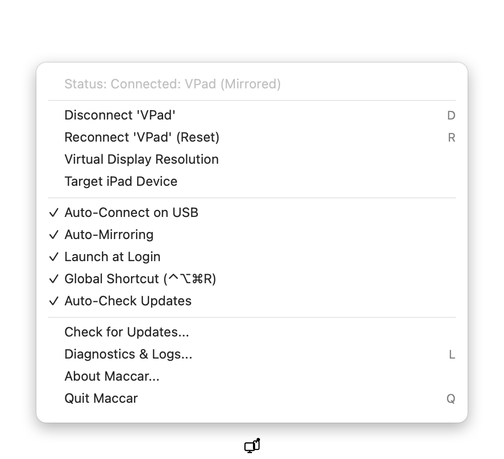
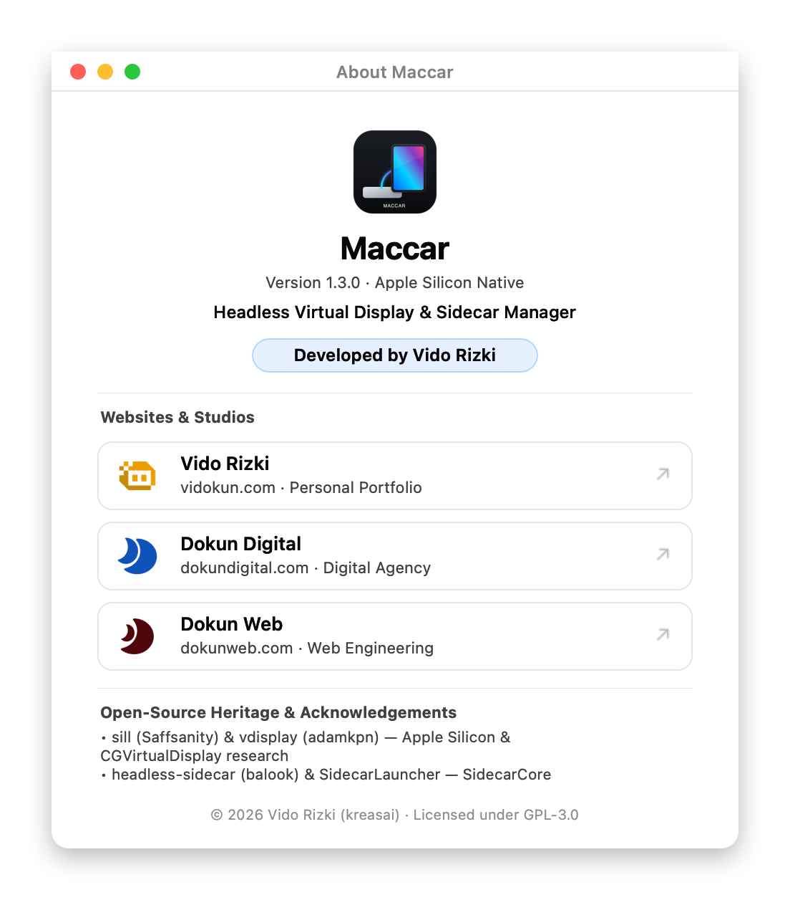
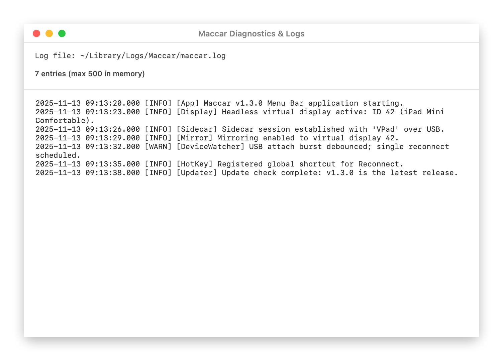

The display requirement
Sidecar extends a display. With nothing attached, there is nothing to extend, so the connection never becomes available — even though the iPad is sitting right there.
No monitor · No dummy plug · One iPad
macOS wants a screen before Sidecar will start — that is the whole reason a Mac mini with no monitor needs an HDMI dummy plug. Maccar puts a Retina display in memory instead, so your iPad connects over USB-C or Wi-Fi and the Mac mini gets a real desktop again.

macOS wants a display before it will hand a screen to Sidecar. That single requirement is what sends people looking for a dummy HDMI plug — and why an iPad alone is not enough out of the box.
Sidecar extends a display. With nothing attached, there is nothing to extend, so the connection never becomes available — even though the iPad is sitting right there.
The usual workaround is a headless HDMI adapter that pretends to be a monitor. It works, but it costs money, occupies a port, and adds one more thing that can fail silently.
Even with a display present, a sleeping or unplugged iPad turns into a stream of failed connection attempts. Without a deliberate retry model the app turns into an alert generator.
No hardware, no virtual machine, no second Mac. Maccar asks macOS for a display object, waits until the system treats it as usable, then lets Sidecar do its job.
Maccar creates a CGVirtualDisplay in memory with a Retina-class resolution. macOS registers it exactly like a monitor, so every window server API behaves normally.
Each mode is checked with CGDisplayModeIsUsableForDesktopGUI before it is offered, then applied with CGConfigureDisplayWithDisplayMode so an active iPad session is not torn down by a resolution change.
With a usable display present, Maccar asks Sidecar to connect to your registered iPad over USB-C or Wi-Fi, then mirrors the iPad onto the virtual screen so the Mac mini has a primary display again.
A USB attach hook notices the cable coming back, a presence check makes sure the iPad is really there before connecting, and failures are classified so one transient hiccup does not disable automatic recovery.
The installer checks macOS 14+, the SHA-256 digest, and the code signature before it touches /Applications.
curl -fsSL https://raw.githubusercontent.com/vidokun/Maccar/main/install.sh | shNo Xcode and no Command Line Tools. Add --dry-run to preview the checks, --version to pin a release, or --prefix to pick another folder.
Open the image, drag Maccar.app into Applications, then launch it. Later releases arrive through Check for Updates in the menu bar.
A dummy plug works. Buying a monitor works. Both cost money and neither reconnects for you.
| Approach | Extra hardware | Actual screen | Reconnects itself |
|---|---|---|---|
| Maccar | None | Yes | Yes |
| HDMI dummy plug | An adapter | No | No |
| Spare monitor | A whole display | Yes | No |
| Headless VNC only | None | No | No |
Menu bar controls, the about window, and rotating diagnostics.

Version, attribution, and the GPL-3.0 notice.

Rotating logs, capped at 512 KB on disk.
Every one of these exists because a headless machine cannot ask a human to click something.
CGVirtualDisplay allocates a Retina screen in memory, so Sidecar finds a display to extend or mirror.
A 750 ms USB attach hook wakes the session again, while repeated -200 failures back off instead of storming.
Check for Updates validates the manifest, the SHA-256 digest, the bundle identifier, and the code signature before staging.
Devices are keyed on Sidecar's stable identifier, not their name. Two iPads called the same thing stay distinct, and renaming one cannot retarget the app.
Resolutions the active display cannot actually use are filtered out of the menu, so a preset never appears only to fail when clicked.
Copy Diagnostics puts version, macOS build, launch-at-login state, connected iPads and the log path on the clipboard — with your home folder shortened to ~/.
A Mac mini in a cupboard running builds, backups or media. You want to look at it from an iPad on the sofa, not carry a monitor to it.
A Mac mini in a bag and an iPad in a case. Nothing else. Maccar turns that into a complete computer with one cable.
A machine that must boot and show something without anyone attaching a screen. The virtual display is there from the start.
A build machine that only needs a screen twice a week. Maccar gives it one on demand and gets out of the way when you unplug.
Yes. Apple requires an active display before Sidecar will start, which is why a headless Mac mini normally needs an HDMI dummy plug. Maccar creates a Retina virtual display in macOS memory instead, so Sidecar sees a real display and your iPad connects over USB-C or Wi-Fi.
No. Maccar replaces the dummy plug with a CGVirtualDisplay allocated in software. Nothing needs to be plugged into the HDMI port, and nothing extra needs to be bought.
macOS 14.0 or newer. Maccar uses CGVirtualDisplay plus SidecarCore, so it works on both Apple Silicon and Intel Macs that can run macOS 14.
Every release is signed with an Apple Developer ID certificate and notarized by Apple. macOS opens it on double-click without the cannot-be-verified warning, and each release publishes a SHA-256 checksum that the installer verifies before installing.
Both work, but USB-C is the reliable path for a headless setup. Maccar reacts to physical USB attach and checks that an iPad is actually present before it calls connect, so it never issues a connection for a device that is not there.
Yes. Devices are identified by Sidecar's stable identifier rather than their name, so two iPads with the same name stay distinct, renaming one does not retarget the app, and Forget genuinely removes it. Switching between registered iPads is an explicit Menu Bar action.
Sidecar restarts its display agent on every replug and refuses connections until that agent is ready. Maccar retries automatically and reconnects in about eight seconds without any manual step, but that first attempt can raise a single Sidecar alert. This is documented as a known limitation rather than hidden.
Yes. Maccar is free software under the GNU General Public License v3.0, and the full source is on GitHub.
Maccar is free software under GPL-3.0 and always will be. There is no paywall, no license key, and no upsell — a donation goes straight to notarization fees, an Apple Developer account, and the time that keeps the reconnect logic honest.
Maccar stands on public CoreGraphics and Sidecar research from the macOS community.
Apple Silicon headless virtual display and iPad workflow.
Private CGVirtualDisplay bridging patterns.
SidecarCore framework exploration and SidecarLauncher.
Download the disk image, drag it to Applications, and plug in your iPad. The first launch needs no configuration.